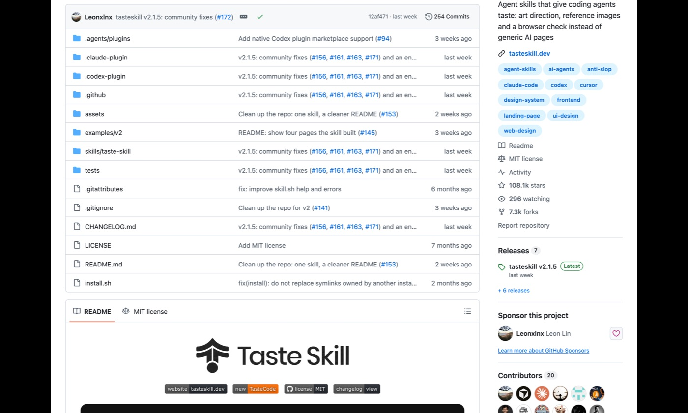

taste-skill 사용법: AI 티 나는 웹페이지를 피하는 스킬 · 깃허브 털기 #04
직접 깔기 벅차면, 사업자용 페이지·광고 제작은 맡길 수도 있어요맡기기 →⚠ 채팅 창이 아니라 클로드 코드 입력창입니다클로드 데스크톱 앱의 「Code」 탭이나 터미널에서 claude를 친 뒤 나오는 입력창에 붙여 넣어야 깔립니다. 클로드 유료 구독(Pro · 월 20달러부터)이 필요합니다.
AI한테 웹페이지를 맡기면 대개 비슷하게 생긴 결과가 나옵니다. 가운데 큰 제목, 작은 꼬리표, 카드 3칸, 은은한 그라데이션. taste-skill은 클로드가 페이지를 만들 때 「흔한 AI 티」를 스스로 찾아 고치게 하는 무료 스킬입니다. 깔고 나서 제일 먼저, 제 홈페이지를 검사시켜 봤습니다.
- AI 티 검사
- 디자인 방향 고르기
- 브라우저로 직접 확인
- 설치 ⭐⭐⭐
한눈에 보기 · 4단계
- 준비클로드 앱 「Code」 탭 · 처음 한 번
- 깔기작업 폴더에서 명령 한 줄
- 내 페이지 검사「AI 티 검사해 줘」 한 마디
- 고치게 하기아래 복사 문장 3개
1준비 · 처음 한 번
필요한 것은 클로드 유료 구독(Pro · 월 20달러부터)과 클로드 코드, 그리고 이 스킬이 쓰는 Node 22 이상과 크롬(또는 엣지)입니다(README 기준). 크롬은 대부분 이미 있고, Node가 없으면 클로드가 깔 때 알려 줍니다. 키·결제는 필요 없습니다.
클로드 코드를 처음 여는 방법은 #02 따라 하기의 1단계와 같습니다. 데스크톱 앱 「Code」 탭에서 폴더를 하나 고르면 됩니다.
2깔기
스킬을 쓸 작업 폴더(예: 홈페이지 폴더)를 연 상태에서 붙여 넣으세요. 이 스킬은 그 폴더에만 깔립니다.

taste-skill을 이 폴더에 깔아 줘. 깃허브 README에 적힌 명령은 이거야: npx skills add https://github.com/Leonxlnx/taste-skill --skill "design-taste-frontend"
깔기 전에 무엇을 실행하는지, 어디에 깔리는지, 돈이나 로그인이 필요한 게 있는지 쉬운 말로 먼저 알려 주고 내가 「좋아」라고 하면 진행해.설치 화면의 보안 검사에서 「알림 1개 · Med Risk」가 나올 수 있습니다. 제 경우 참고 사진을 찾으려고 공개 사진 사이트에 접속하는 기능 때문이었고, 그걸 확인한 뒤 진행했습니다.
3내 페이지 검사
taste-skill로 이 폴더의 페이지를 검사해 줘(lint). 고치지는 말고, 걸린 항목을 쉬운 말로 표로 정리해 줘: 무엇이 걸렸는지, 왜 「AI 티」인지, 어느 파일 몇째 줄인지.제 홈페이지(heonlog.com)의 「맡기기」 화면과 디자인 파일을 검사시킨 실제 결과입니다. 꽤 많이 걸렸습니다.
실제 출력 · 2026-11-02 · 제 홈페이지 2개 파일TASTESKILL · LINT 2 file(s)
FAIL
[eyebrow] 제목 위 작은 꼬리표 (3×)
[hairline] 얇은 구분선 (7×)
[gradient] 그라데이션 채우기 (1×)
[emoji] 이모지를 버튼 모양으로 씀 (1×)
[mono] 코드가 아닌데 고정폭 글꼴 (3×)
WARN
[outlined-box] 1px 테두리 상자 (20×)
RESULT: 15 FAIL, 20 WARN
항목 이름 옆 한국어 설명은 제가 붙였습니다. 원래 출력은 영어이고, 파일 이름과 줄 번호까지 나옵니다.
4고치게 하기
① 걸린 것만 고치기
방금 taste-skill 검사에서 FAIL로 나온 것만 고쳐 줘. 글자 내용과 링크는 바꾸지 말고, 고친 뒤 다시 검사해서 FAIL이 몇 개 남았는지 알려 줘.② 새 페이지를 처음부터
taste-skill을 써서 (무엇을 파는지 · 누구에게) 소개 페이지를 하나 만들어 줘. 만들기 전에 디자인 방향 2개를 먼저 보여 주고, 내가 고르면 만들어. 다 만든 뒤 브라우저로 열어 확인하고 고쳐 줘.③ 남이 만든 페이지 점검만
taste-skill 기준으로 이 페이지가 「AI가 만든 티」가 나는지만 점검해 줘. 고치지 말고, 가장 눈에 띄는 것 3가지와 그 이유만 알려 줘: (페이지 파일 또는 주소)!막히면
README 기준 Node 22 이상이 필요합니다. 클로드에게 「Node를 22 이상으로 올리는 방법을 하나씩 알려 줘, 관리자 비밀번호가 필요하면 먼저 물어봐」라고 하세요.
정상입니다. 제 홈페이지도 FAIL 15개였습니다. 전부 고칠 필요는 없고, 진짜 이유가 있는 줄은 남겨 둘 수 있습니다(스킬 안내: 그 줄에 taste-skill-ignore 표시).
방금 오류가 무슨 뜻인지 쉬운 말로 알려 주고, 고치는 방법을 하나씩 알려 줘. 관리자 비밀번호가 필요하거나 돈이 드는 방법이면 하기 전에 먼저 물어봐.✕하지 않은 것
- 검사 결과대로 홈페이지 전체 고치기 — 아직 안 했습니다. 고치면 전후 비교로 다시 올리겠습니다.
- 「디자인이 좋아진다」는 약속 — 이 스킬은 흔한 패턴을 찾아 주는 도구이고, 무엇이 좋은 디자인인지는 결국 사람이 고릅니다.
↩지우고 싶으면
이 폴더에 깔린 taste-skill(design-taste-frontend)을 지우고 싶어. 먼저 지울 파일·폴더 목록만 보여 주고(실제로 지우지는 말고), 내가 확인하면 그때 지워 줘.제 경우 스킬은 작업 폴더 안 .claude/skills/design-taste-frontend 한 곳에 깔렸습니다.
AI한테 웹페이지를 시켰더니 어디서 본 듯한 모양이 나온다면, 이 스킬을 보세요. taste-skill은 클로드가 웹페이지를 만들 때 보라색 그라데이션, 똑같은 카드 3칸 같은 흔한 AI 디자인을 피하게 해 주는 깃허브 무료 도구입니다. 개발은 모르지만 직접 깔아 본 그대로 적었습니다.
깃허브: Leonxlnx/taste-skill · 라이선스 MIT(상업적으로 써도 됨) · 별 약 10.7만 개(2026-11-01 기준) · 깐 날 2026-11-01
| 무엇 | 클로드가 웹페이지를 만들 때 보라색 그라데이션·똑같은 카드 3칸 같은 흔한 AI 디자인을 피하게 하는 스킬입니다. |
|---|---|
| 준비물 | 클로드 코드 |
| 난이도 | ⭐⭐⭐ 터미널 필요 · 설치 명령 한 줄 |
무엇을 하는 도구인가
혼자 화면을 만들어 주는 프로그램이 아닙니다. 클로드 코드가 웹페이지를 만들 때 따르는 디자인 기준을 바꿔 주는 「스킬」입니다. 흔히 보이는 AI 디자인을 피하라는 기준이 들어 있습니다.
설치 난이도 ⭐⭐⭐ (터미널 필요)
- 설치 명령 한 줄로 끝났습니다. 터미널(검은 명령 창)에 넣는 명령입니다.
깔면서 막힌 곳
- 저장소 안에 비슷한 스킬이 여러 개 들어 있습니다. 전부 깔지 않고, 이름(design-taste-frontend)을 콕 집어서 하나만 깔았습니다.
- 깔고 보니 컴퓨터 전체가 아니라 그때 열어 둔 작업 폴더 하나에만 들어가 있었습니다. 아래 함정에 자세히 적었습니다.
써 본 결과
- 작업 폴더에 스킬이 하나 깔린 것을 확인했습니다.
- 이 스킬로 만든 페이지를 전후로 비교해 보지는 않았습니다(써 보지 않았음).
근데 함정이 있어요
설치 위치입니다. 이 스킬은 컴퓨터 전체가 아니라 설치할 때 열어 둔 작업 폴더 하나에만 들어갑니다. 다른 폴더에서 일할 때 쓰려면 그 폴더에 다시 깔아야 하는 구조입니다. 깔았는데 AI가 안 쓰는 것 같다면, 지금 열어 둔 폴더가 깐 폴더와 같은지부터 확인해 보세요.
그리고 비슷한 일을 하는 디자인 스킬을 이미 깔아 두었다면 겹칠 수 있습니다. 깔기 전에 지금 있는 스킬로 안 되는 일인지부터 확인하는 것을 권합니다.
자주 묻는 질문
깔았는데 클로드가 안 쓰는 것 같아요.
이 스킬은 컴퓨터 전체가 아니라 설치할 때 열어 둔 작업 폴더 하나에만 들어갑니다. 지금 열어 둔 폴더가 깐 폴더와 같은지부터 확인해 보세요.
저장소에 있는 스킬을 전부 깔아야 하나요?
아니요. 저장소 안에 비슷한 스킬이 여러 개 있는데, 저는 이름(design-taste-frontend)을 콕 집어서 하나만 깔았습니다.
이런 분께
- 클로드로 웹페이지·소개 페이지를 만들고 있는 분
- 결과물이 「AI가 만든 티」가 난다는 말을 들어 본 분
- 한 작업 폴더에서만 쓸 스킬을 찾는 분
묻고 답한 것
막힌 곳은 이 회차 인스타그램 게시물에 댓글이나 DM으로 남겨 주세요. 여러 분이 같은 데서 막히면 답을 여기에 정리해 둡니다.
아직 정리한 질문이 없어요.